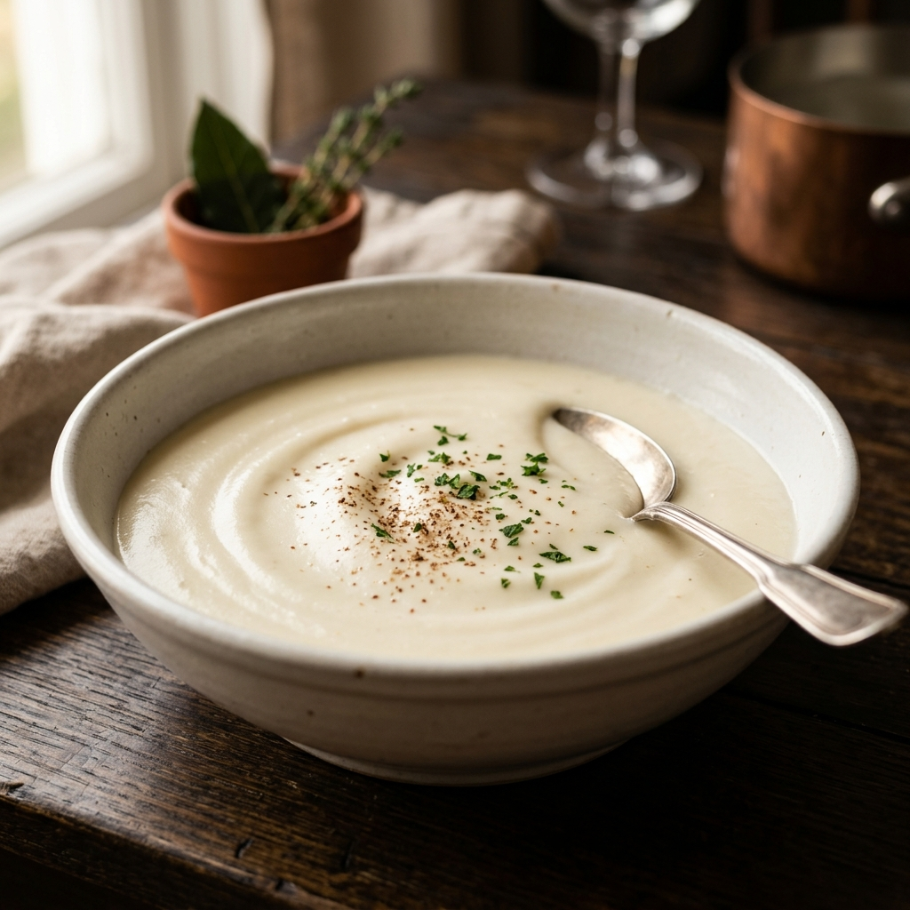
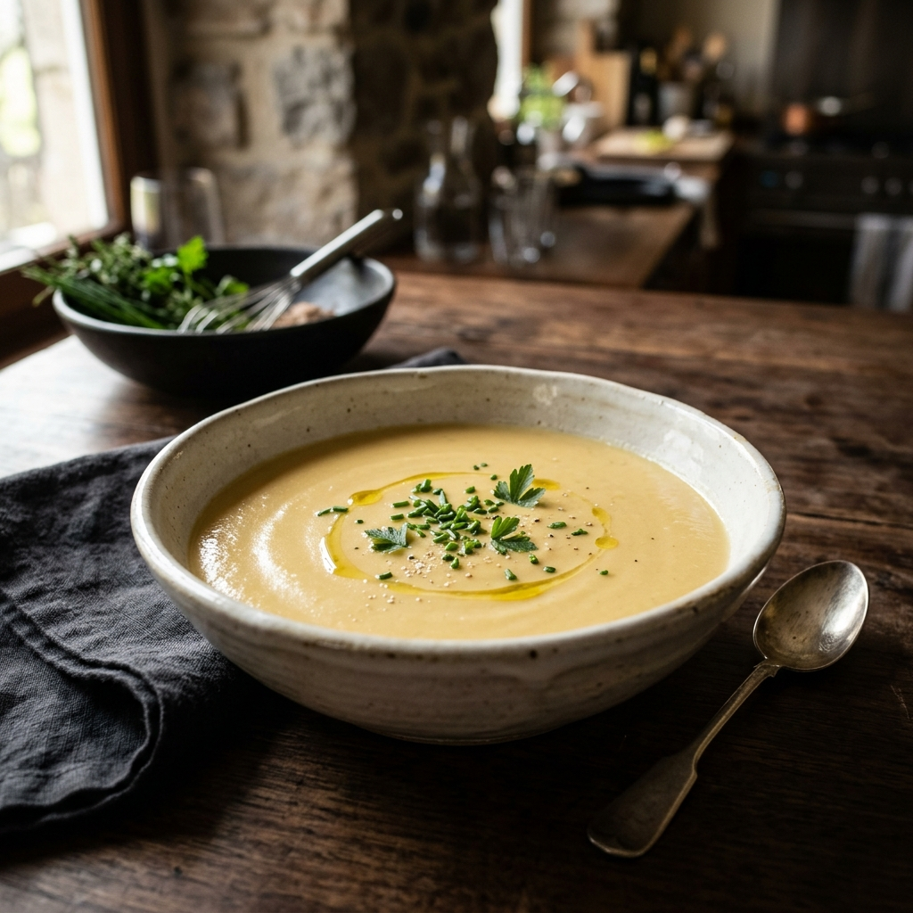
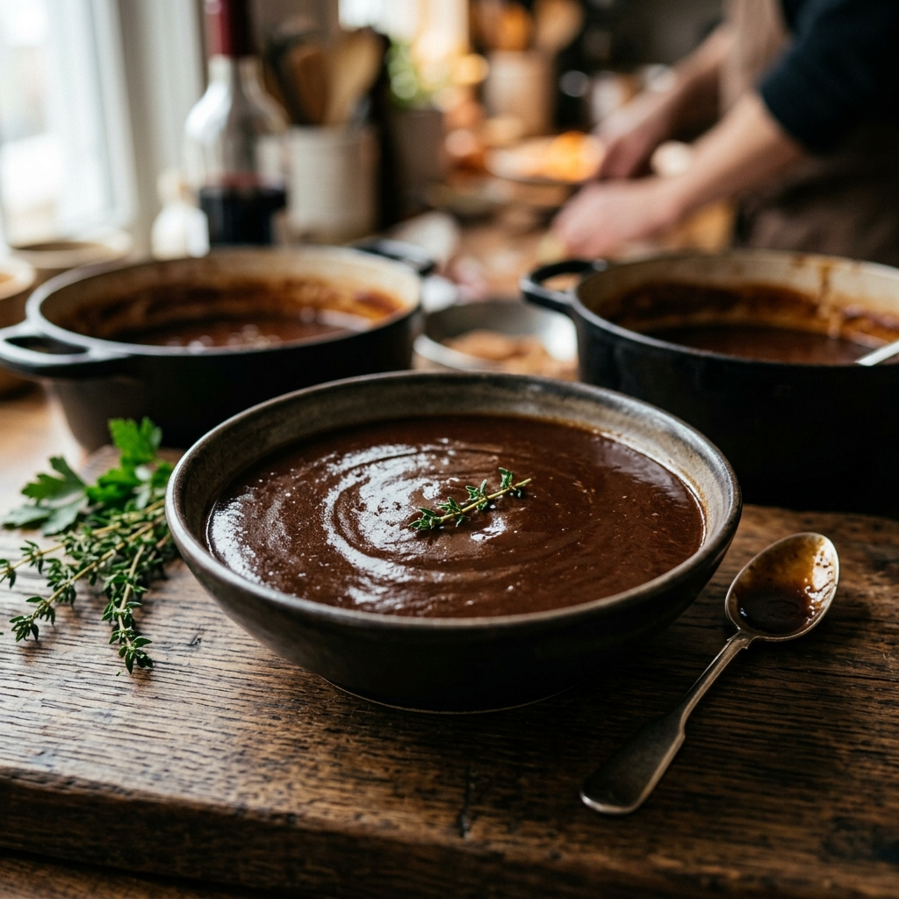
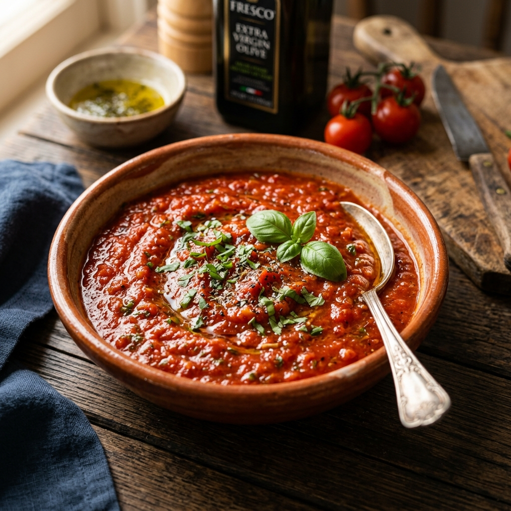
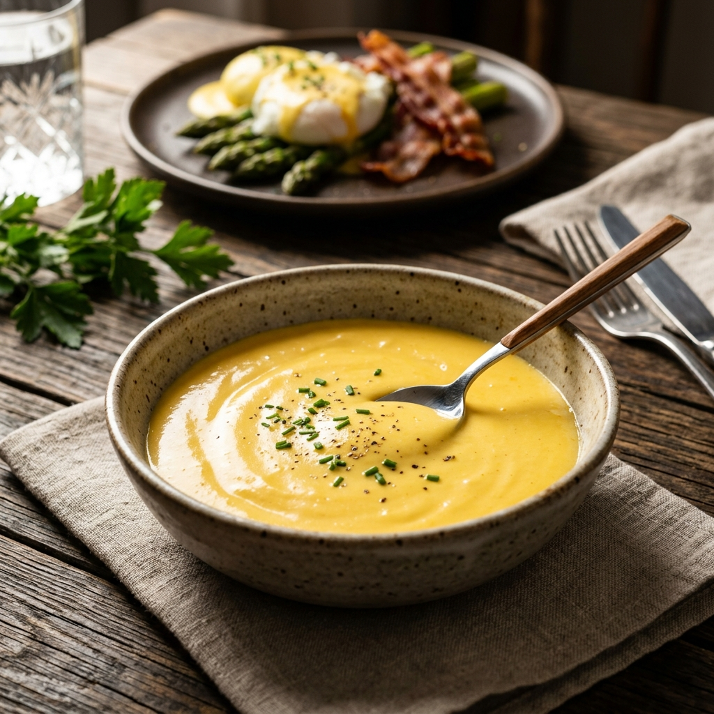
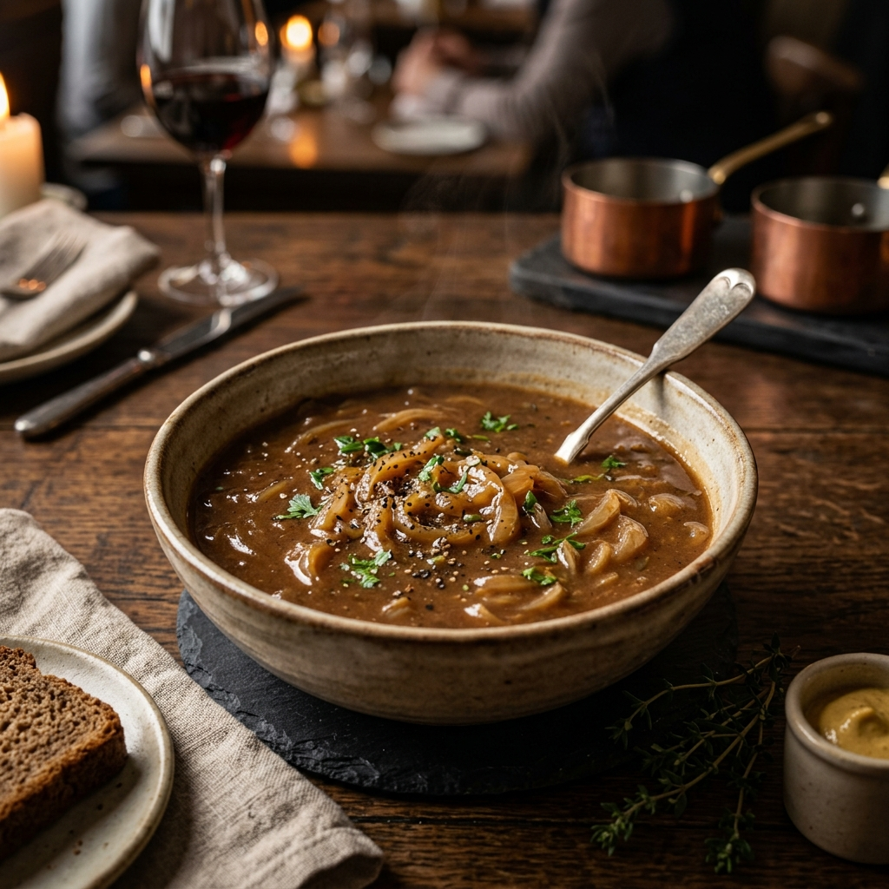
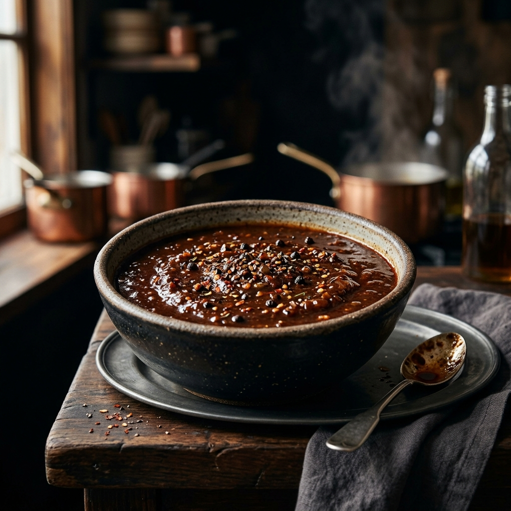
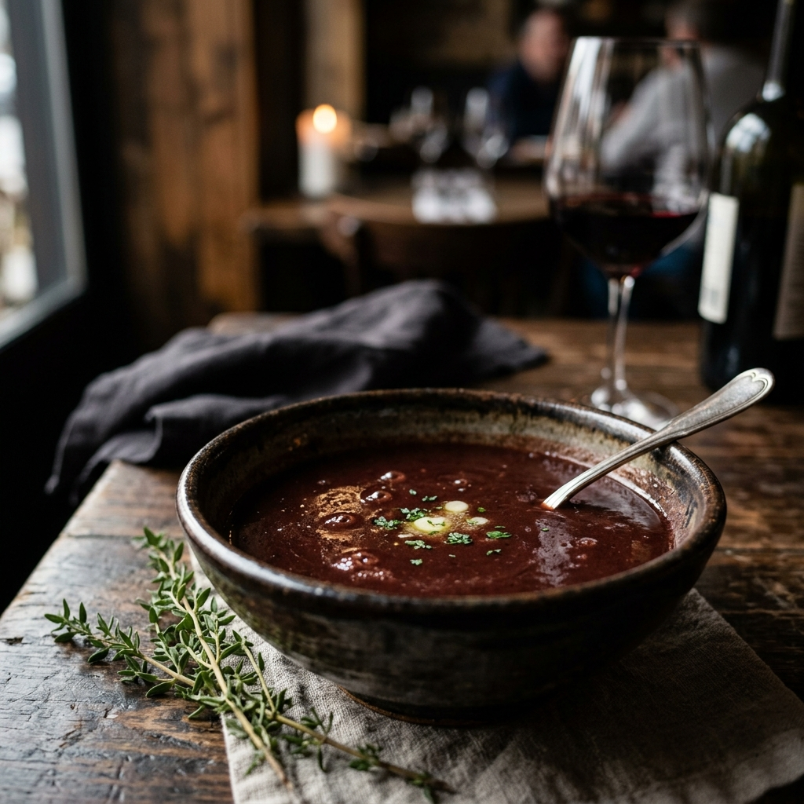
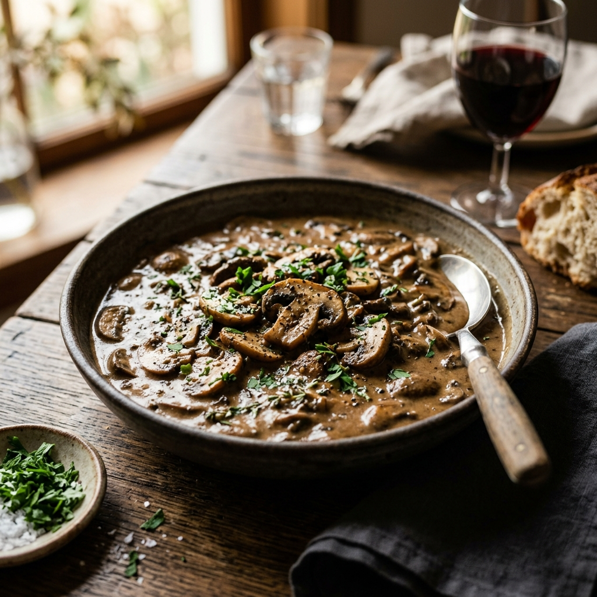

الصلصات الأم

صوص البشاميل
حليب + رو أبيض
الخطوات:
- أذب 2 ملعقة كبيرة زبدة، وأضف 2 ملعقة كبيرة دقيق (لتحضير رو أبيض).
- أضف 2 كوب حليب دافئ تدريجياً مع الخفق المستمر.
- كَثِّف المزيج على النار.
- تَبِّله بالملح، ورشة من جوزة الطيب.

صوص الفيلوتيه
مرق فاتح + رو أشقر
الخطوات:
- حضّر رو أشقر من الزبدة والدقيق.
- أضف 2 كوب مرق دجاج دافئ تدريجياً.
- يُطهى لمدة 15 دقيقة مع إزالة الرغوة، ثم يُتبل.

صوص الإسبانيول
مرق لحم داكن + رو بني
الخطوات:
- كَرْمِل بصل وجزر وكرفس مقطعين ناعماً.
- حضّر رو بني غامق، وأضف ملعقتين من معجون الطماطم.
- أضف مرق اللحم الساخن وباقة عطرية.
- يُطهى ببطء لساعة كاملة ثم يُصفى.

صوص الطماطم
طماطم + مرق + خضار عطرية
الخطوات:
- شوّح البصل، والثوم.
- أضف طماطم مهروسة وكوب مرق.
- تَبِّل المزيج واتركه يُطهى ببطء لمدة 45 دقيقة للتكثيف.

صوص الهولنديز
مستحلب (صفار بيض + زبدة)
الخطوات:
- فوق حمام مائي، اخفق 3 صفار بيض مع ملعقة عصير ليمون.
- أضف نصف كوب زبدة مذابة دافئة قطرة قطرة مع الخفق السريع جداً.
- تَبِّله وقدّمه فوراً.
الصلصات الفرعية

1. صوص روبير
المقادير: زبدة، كراث/بصل، 1/2 كوب نبيذ أبيض (أو مرق مع خل)، 2 كوب ديمي غلاس، خردل ديجون.
الخطوات:
- شوّح البصل في الزبدة حتى يذبل ويصبح شفافاً.
- أضف السائل الحمضي واتركه يغلي حتى يتبخر لثلث حجمه.
- أضف الديمي غلاس واغله ببطء لمدة 10 دقائق.
- ارفع القدر عن النار، وأضف الخردل واخفق (يجب ألا يغلي بعد إضافة الخردل).

2. صوص ديابل
المقادير: كراث أندلسي، خل نبيذ أبيض، فلفل أسود مجروش، ديمي غلاس، فلفل كايين (شطة).
الخطوات:
- اغلِ البصل، الخل، والفلفل المجروش حتى يتبخر الخل تقريباً.
- أضف الديمي غلاس واتركه يُطهى ببطء لمدة 15 دقيقة.
- صَفِّ الصوص (اختياري) وأضف الشطة حسب الرغبة.

3. صوص بوردليز
المقادير: زبدة، كراث، نبيذ أحمر (أو عصير عنب غير محلى مع خل)، زعتر وغار، ديمي غلاس، نخاع عظم (اختياري).
الخطوات:
- اغلِ البصل، السائل الحمضي، والأعشاب حتى يتبخر ويتبقى مقدار ملعقتين فقط.
- أضف الديمي غلاس واغله ببطء لمدة 20 دقيقة.
- صَفِّ الصوص بمصفاة دقيقة.
- أضف نخاع العظم الساخن، ثم ارفعه عن النار واخفق الزبدة الباردة معه للحصول على لمعان.

4. صوص المشروم
المقادير: فطر طازج، كراث، ثوم، ديمي غلاس، كريمة طبخ (اختياري)، زبدة.
الخطوات:
- شوّح الفطر في الزبدة على نار عالية حتى يتحمر.
- خفف النار وأضف البصل والثوم وقلّب لدقيقتين.
- اسكب الديمي غلاس واغله لمدة 10 دقائق.
- أضف الكريمة في النهاية إذا رغبت بقوام أغنى ولون أفتح.